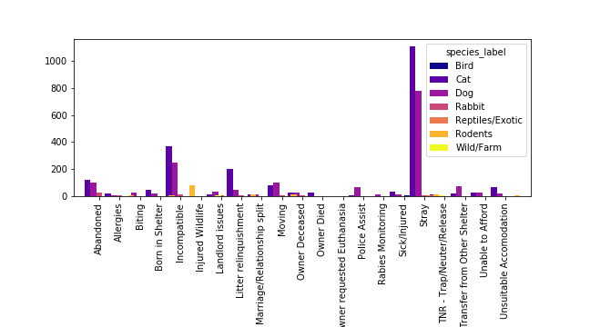

Exploring the factors that lead animals to shelters.
These charts explore the most common reasons that animals are taken into the Bloomington Animal Care and Control facility. By understanding how the animals end up in the shelters, we may be able to address common causes.
The most common reason that animals are taken into this facility is because they are strays. Obviously this means shelter workers aren't able to interview previous owners to better understand how the animals became stray.
Additional analysis on the animals not classed as "stray" can provide some insight.
The most common intake reason is that the animal is stray. The next most common intake reason is that the owner is moving, followed by the animal being considered "incompatible" with the household.
Further research should be done to understand the factors that cause people to surrender their pets when they move. Is there a scarcity of pet-friendly housing? Are "pet rents" a barrier?
Similarly, understanding what behaviors constitute "incompatibility" could help to lower the overall pet surrender rate.